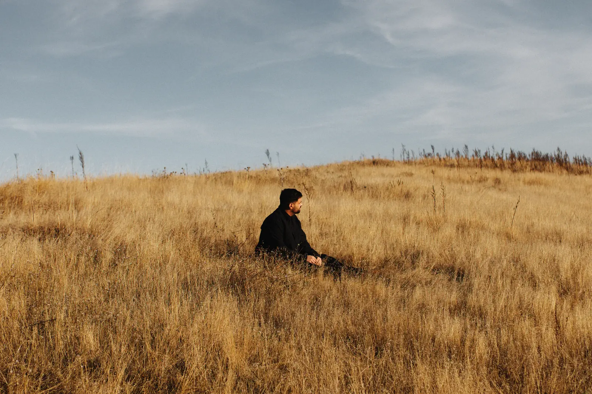
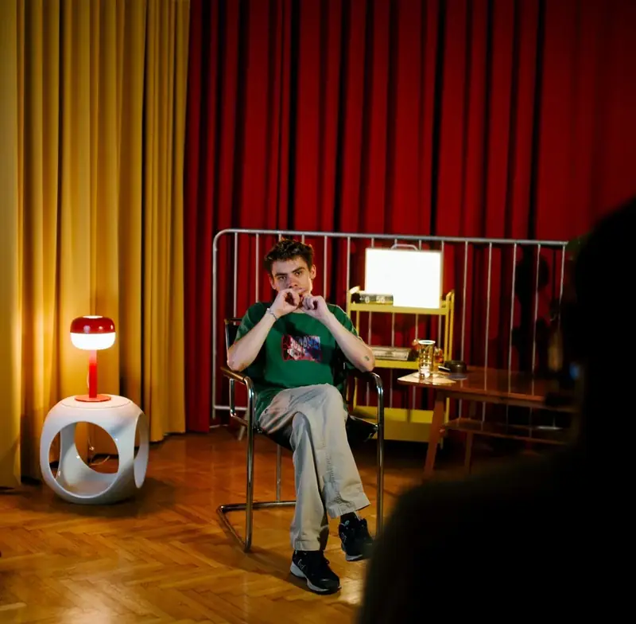

00%

Budapest élő kulturális szcénájának vizuális krónikása — márkáknak, intézményeknek, alkotóknak.
Filmstúdiókkal, kulturális intézményekkel, márkákkal és alkotókkal dolgozunk azon, hogy a történeteik ne csak láthatóak legyenek, hanem kontextust kapjanak.
HBO · Beton.Hofi · Budapest Park · Cenzúra · Sneakerness Kapcsolatfelvétel →
Budapest, 2023 — Kutatás, sűrítés, vizualizáció.
Hat forma, egy gondolat:
a figyelem mint érték.
„A figyelem mint érték — ezt az egyetlen mondatot értik meg legjobban, akikkel a legjobb munkát csináltuk."
Kővári Zoltán · Alapító, Budapest, 2023A 17,5 ezres Instagram-közösség, a 4,47% medián ER, az 1 049 803 IG-megjelenítés és a legerősebb videó 276K megtekintése mögött egyetlen szerkesztői szempont áll — nem mennyiség, hanem rezonancia. Filmfesztiváloktól brand aktivációkig.
A legnagyobb hatású emberek
általában nem tudnak
a hatásukról.
Akikhez kapcsolódtunk.